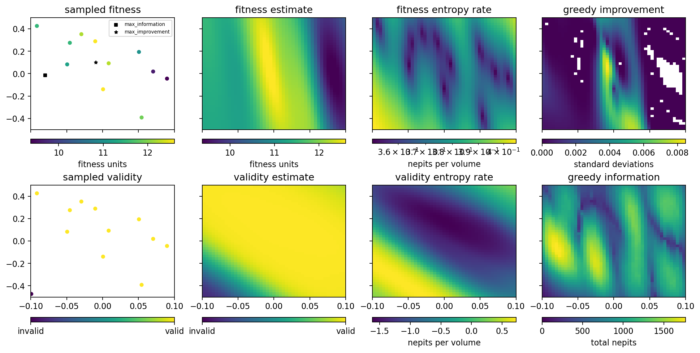
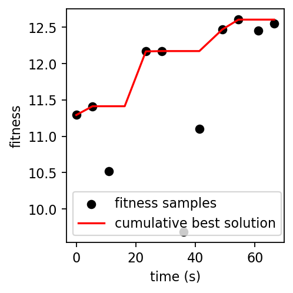

Run the GP optimizer in two dimensions¶
[1]:
%run -i ../../../examples/prepare_gp_optimizer.py
dofs = [kbv.x_rot, kbv.offz] # two degrees of freedom of the vertical KB mirror
hard_bounds = np.array([[-0.10, +0.10], [-0.50, +0.50]])
for dof in dofs:
dof.kind = "hinted"
[2]:
gpo = Optimizer(
init_scheme='quasi-random',
n_init=4,
run_engine=RE,
db=db,
detector=w9,
detector_type='image',
dofs=dofs,
dof_bounds=hard_bounds,
fitness_model='max_sep_density',
training_iter=100,
verbose=True,
)
learning with strategy "quasi-random" ...
kbv_x_rot kbv_offz fitness
0 -0.045632 0.236417 11.292087
1 0.054368 -0.208028 11.412985
2 -0.095632 0.125305 10.514909
3 0.004368 0.458639 NaN
We initialized the GP with the “quasi-random” strategy, as it doesn’t require any prior data. But now that we have some points to work with, we can start to call some more sophisticated learning strategies. Let’s try exploring the space (“explore”), and then try to aim for the best possible fitness (“exploit”).
[3]:
gpo.learn(n_iter=2, n_per_iter=2, strategy='explore', greedy=False, reuse_hypers=False)
gpo.learn(n_iter=2, n_per_iter=2, strategy='exploit', greedy=False, reuse_hypers=False)
learning with strategy "explore" ...
kbv_x_rot kbv_offz fitness
4 0.009946 0.179957 12.168275
5 -0.022362 -0.324428 12.172489
kbv_x_rot kbv_offz fitness
6 0.077032 0.133327 9.687557
7 -0.061594 -0.068229 11.104854
learning with strategy "exploit" ...
kbv_x_rot kbv_offz fitness
8 0.000765 -0.342308 12.470885
9 0.000226 -0.114375 12.605609
kbv_x_rot kbv_offz fitness
10 0.001670 -0.101627 12.454233
11 0.002174 -0.229237 12.555688
We can plot the “state” of the GPs, which shows their posteriors about the whole parameter space:
[4]:
gpo.plot_state(gridded=True)

We can also plot the cumulative maximum fitness over time:
[5]:
gpo.plot_fitness()
